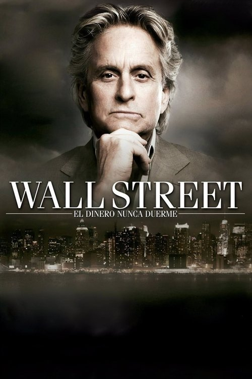

Wall Street: El dinero nunca duerme (2010)
Sinopsis Rápida
En el corazón de Wall Street, donde la ambición se enfrenta a la moral, un joven y ambicioso corredor de bolsa se ve envuelto en un mundo de engaños y traiciones, buscando redención en medio del caos financiero.
Sinopsis Detallada
Ocho años después de su encarcelamiento, Gordon Gekko sale de prisión buscando reconciliarse con su hija Winnie, quien se ve involucrada en las complejas y peligrosas prácticas de un nuevo lobo de Wall Street. La película explora las secuelas de la crisis financiera de 2008, presentando un retrato sombrío de la codicia y la corrupción en el mundo de las finanzas. Mientras Gekko intenta manipular a Winnie y a su nuevo entorno, se enfrenta a las consecuencias de sus actos pasados y el precio de sus ambiciones desmesuradas. Una crítica mordaz al sistema financiero y a la búsqueda incesante del poder.
¿Por qué tenés que verla?
- Una mirada cruda y realista al mundo de las altas finanzas y sus consecuencias.
- La actuación magistral de Michael Douglas, retomando su icónico papel de Gordon Gekko.
- Refleja la realidad de la crisis financiera de 2008 y sus secuelas en la moral y las prácticas financieras.
- Un thriller financiero que mantiene al espectador en vilo hasta el final.
Idea Extra
Comparación entre 'Wall Street' (1987) y 'Wall Street: El dinero nunca duerme' (2010): Evolución de los personajes, temas y crítica social.